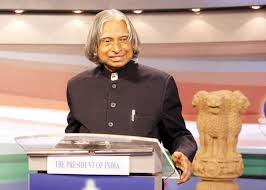

MY INPERATION

1. He was born at Rameswaram, Tamil Nadu to an impoverished family of seven whose sole source of income was a boat. To contribute to their dwindling finances, he started selling newspapers at a very young age.
2. Kalam missed an opportunity to become a fighter pilot for the Indian Air force. His dreams were shattered when he was ranked 9th when there were only 8 openings.
3. Dr Kalam held the distinction of holding doctorates from over 40 universities across the world.
4. On the occasion of his birthday, the United Nations (UN) in 2015 had declared to observe it as World Student’s Day.
5. Kalam’s visit to Switzerland is commemorated as Science Day in the country. This declaration was made in his honour by the Swiss government after the sad demise of this great personality.
6. Kalam wrote a great deal of poetry in Tamil, and was very fond of playing the stringed instrument Veena. He has also published several books such as Wings of Fire, Ignited Minds, Inspiring Thoughts, and Turning Points among others.
7. Researchers at the Jet Propulsion Laboratory (JPL), NASA, discovered a new radiation-resistant bacteria in 2017 and named it ‘Solibacillus Kalamii’ to honour the late President.
8. Kalam was known as the ‘Missile Man’ of India due to his continued, successful work with ballistic missiles and launch vehicle technology. Here are the reasons:
* He was the think tank behind India’s first indigenous Satellite Launch Vehicle (SLV-III).
* He was the Project Director of India’s first satellite Rohini.
* When in DRDO, he was the chief of the Integrated Guided Missile Development Program and developed 5 missiles: Nag, Akash, Trishul, Agni, Prithvi.
* He was the backbone of the operation and development of Prithvi and Agni missiles and also designing indigenous weapons by bringing together various institutions.
-he led to the formation of BrahMos Aerospace between Russia and India.
9. Kalam also made significant contributions to the nuclear capabilities of India. The Pokhran -2 nuclear tests (in 1998) were successful thanks to his organizational and technical support.
10. Throughout his life, he supported the abolition of the death penalty saying that as President of India he felt pain in deciding mercy petitions of death row convicts.
Kalam, the youth icon, wanted every student of the country to be educated and then go on to help the nation grow. He regularly interacted with students of all age and his death too came while he was at it. He passed away due to an unfortunate cardiac arrest minutes after delivering a lecture at the Indian Institute of Management Shillong on May 27 2015.
click on APJ Abdul kalam chatbot
APJ Abdul kalam chatbot